Restaurante & Grill · Cascavel/PR
Buffet caprichado, grelhado na hora.
Buffet por quilo, carne na grelha, café da manhã, marmitas e porções. Para comer aqui, levar ou pedir pelo WhatsApp.
- Seg. a sáb. · 6h às 23h
- Rua Aimorés, 171
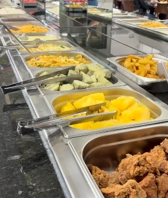
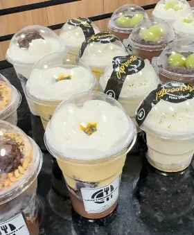
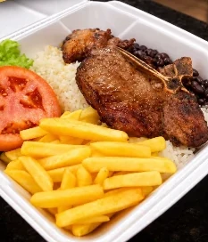
O Maguila’s
Buffet montado, grelha acesa e café desde cedo.
Restaurante e grill em Cascavel. Dá para tomar o café da manhã, voltar no almoço, passar no lanche da tarde e ainda jantar.
-
Manhã
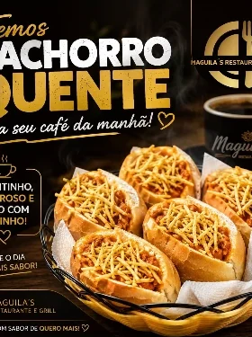
Café da manhã
Cafezinho, pão francês, pão de queijo, salgados e cachorro-quente.
-
Almoço
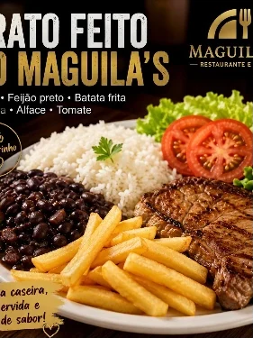
Buffet e prato feito
Buffet por quilo com grelhados na hora, ou o prato feito com feijão preto e fritas.
Conheça o buffet -
Tarde
Lanche da tarde
Empadão de frango, coxinha, empadas, bolos e docinhos para o café.
-
Noite
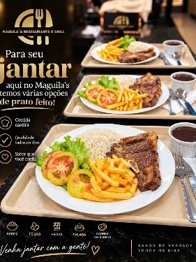
Jantar
Várias opções de prato feito para fechar o dia.
Destaque da casa
Nosso buffet variedade e sabor
- Por quilo
- Saladas, pratos quentes e carnes. Você monta o prato do seu jeito.
- Grelha na hora
- A carne vai para a grelha quando você pede.
- Muda com o dia
- Feijoada e strogonoff já passaram por aqui.
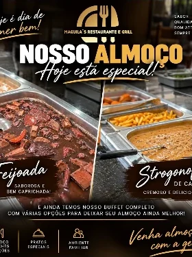
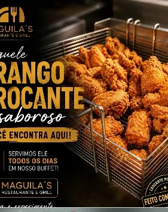
Galeria
Direto do nosso Instagram
Publicações do perfil do restaurante. Algumas aparecem recortadas para mostrar só a comida.
Ver o perfilPrévia — recortes de capturas de tela, em tamanho original (cerca de 280 px). Serão trocados pelas fotos originais.
Coxinha de mandioca com costela Empadas 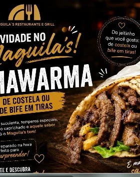
Shawarma de costela 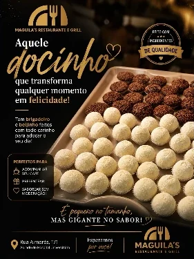
Brigadeiro e beijinho 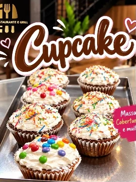
Cupcakes 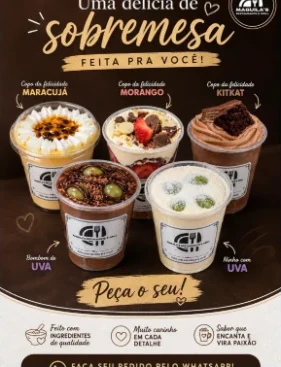
Copos da felicidade
Localização
Venha nos visitar
Rua Aimorés, 171 Santo Onofre · Cascavel/PRAo lado do Hospital Universitário
Maguila’s · Restaurante & Grill
Horário a confirmar
Segunda a sábado
6h às 23h
Rua Aimorés, 171 · Cascavel/PR
Foto da fachada pendente — entra neste espaço quando chegar.